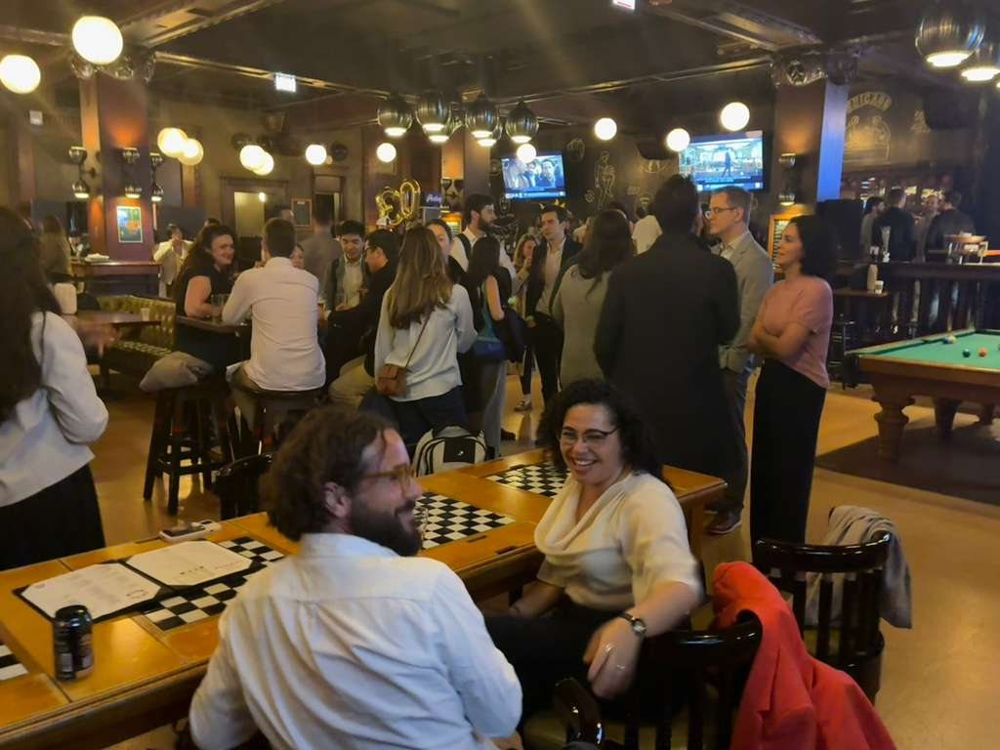
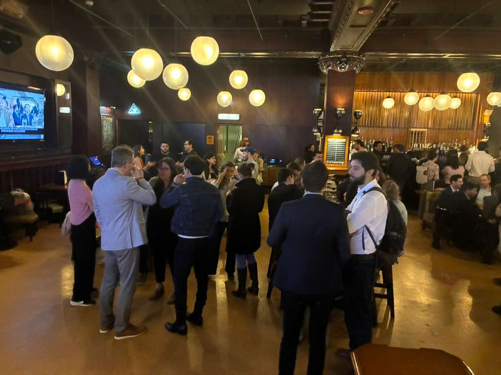

Informal gatherings for scholars of Latin America
Connecting researchers at APSA & MPSA since 2024
Upcoming EventsLatin Americanist Meetups (LAM) is a committee that organizes informal social gatherings for scholars doing research on Latin America at major political science conferences — primarily APSA and MPSA.
Our goal is simple: create a relaxed, inclusive space to meet new colleagues, reconnect with old ones, and continue conversations that start inside panels and sessions but deserve more time and fewer constraints.
LAM events are drop-in happy hours. No RSVP, no registration, no agenda — just good conversation among people who share a passion for Latin American politics and society.
Drop-in happy hours at venues near the conference hotel. No agenda, no panels.
Open to all scholars — faculty, postdocs, graduate students — working on Latin America.
We meet at APSA every fall and MPSA every spring, building community over time.
Just a 2-minute walk from the Palmer House. Drop-in, no RSVP needed. Each person covers their own drinks and food.
16-minute walk from the Vancouver Convention Centre.
A glimpse of what LAM events look like — scholars connecting, catching up, and enjoying good conversation after a long day of panels.


LAM is organized by a small committee of Latin Americanist political scientists committed to building community in the discipline.
LAM events are announced through conference listservs and social media. If you'd like to get in touch with the committee or suggest a venue for a future gathering, feel free to reach out.
Contact the Committee